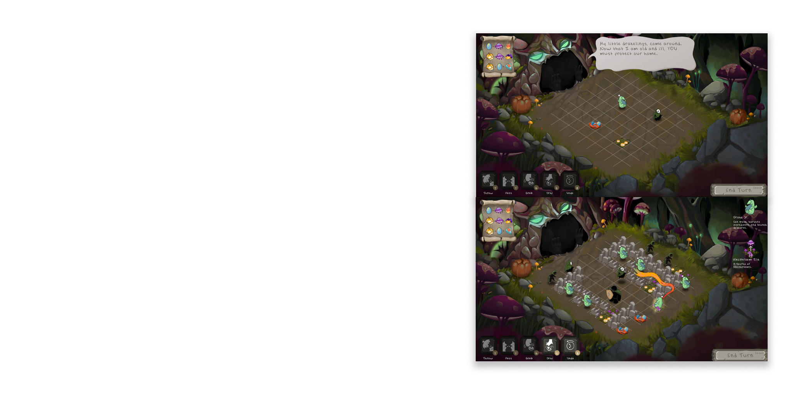
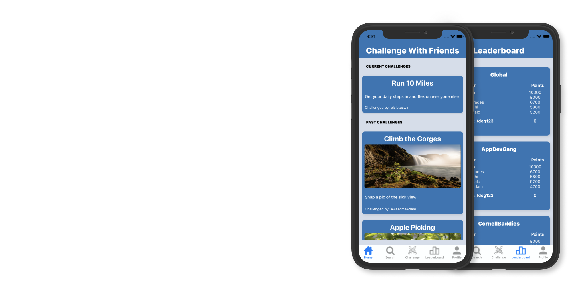
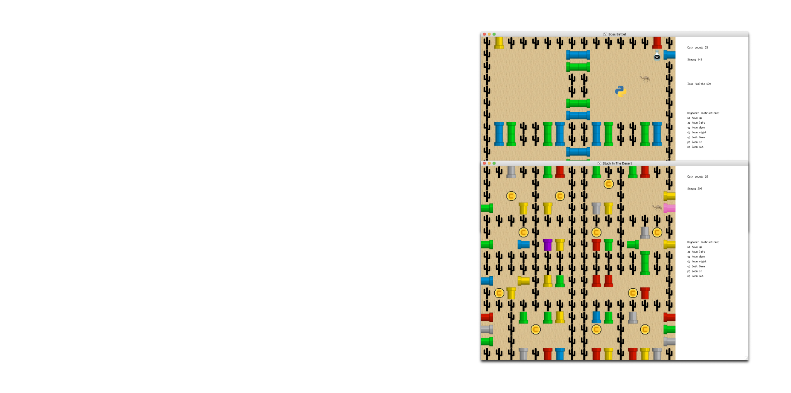
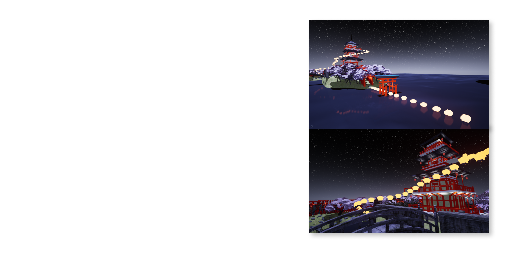
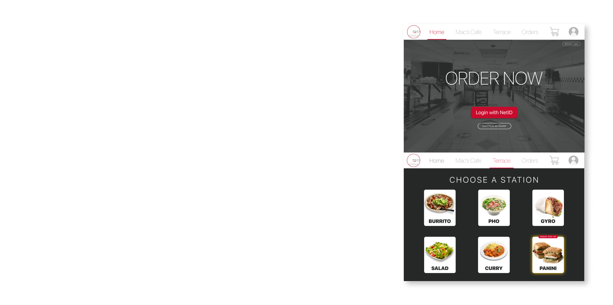
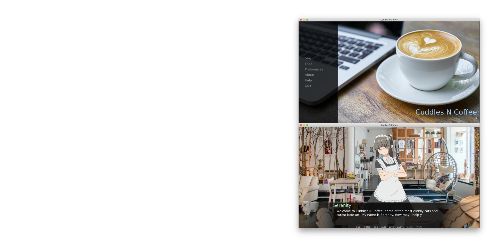
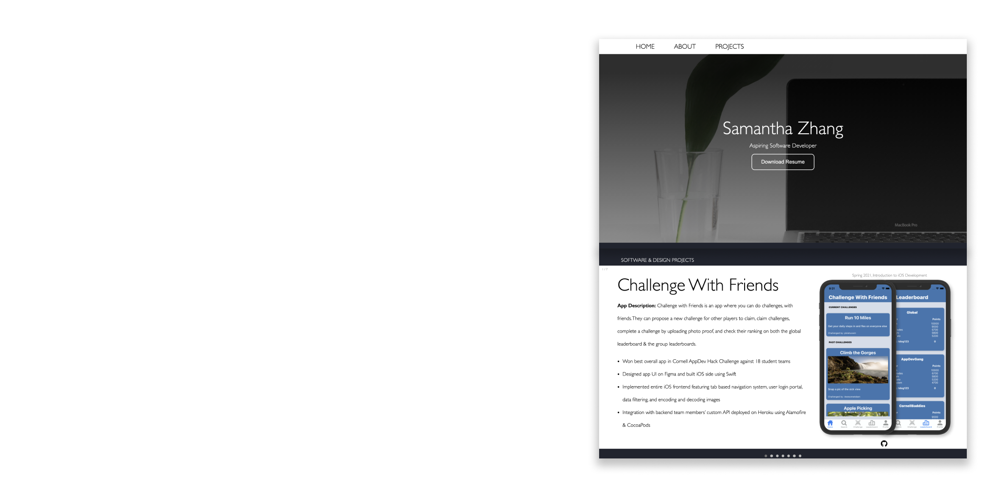

Senior at Cornell University & Aspiring Software Developer
ABOUT ME
Hello! My name is Sammie, and I am a Computer Science major studying at Cornell University College of Engineering,
Class of 2023. I am self-motivated and always striving for excellence in my endeavors.
I am looking to be part of a
team to develop impactful solutions. At Cornell, I have been making an impact through my extracurricular
involvements. As a part of Cornell Nexus, I am working with a diverse team of 23 students to make an autonomous
robot that will collect microplastics from beaches and oceans. I value teamwork, and I believe collaboration is
fundamental for success. You can also find me empowering women in tech as a Girls Who Code Volunteer, Photo and Film
Committee Member, and Undergraduate Mentor for Women In Computing at Cornell (WICC). In a society where women only
earn 18% of computer science bachelor's degrees in the United States, I wish to close this gender disparity. Whether
I am teaching High School GWC students programming or simply talking to peers after my classes, I always aim to
foster an inclusive, comfortable environment. I hope to encourage people from all backgrounds to confidently engage
with the CIS community.
Some of my interests include video editing, playing video games, designing, origami, and watching Youtube +
competitive cooking shows.
PROJECTS
Here are some software and design related projects I have worked on.
Feel free to check out clips of my software projects and prototype demos of my design
projects
by clicking on the buttons on the top right of a project and then scrolling down.
For Figma demos, you can interact with the components that are highlighted in light blue upon clicking on the
prototype.
SOFTWARE & DESIGN PROJECTS
1 / 8

Cupdrakes
Game Description:
Cupdrakes is a turn-based strategy game where you position cute little
dragons to bake and launch fantastical desserts to defeat human invaders
threatening their home. Players can explore 20 levels of a unique
fantasy world, unlocking different recipes and player-enemy interactions.
Won the audience favorite award at GDIAC 2022 showcase of 12 student games.
Collaborated with programmers, designers, and composers daily to build a turn-based strategy game using
libGDX.
Implemented UI screen elements, in-game navigation system, tutorialization, and user input handling.
Designed prototypes for game interactions in Figma.
Iterated on level design and game elements based on playtesting and player feedback.
Spring 2022, Introduction to Game Architecture
2 / 8

Challenge With Friends
App Description:
Challenge with Friends is an app where you can do challenges, with
friends. They can propose a new challenge for other players to claim,
claim challenges, complete a challenge by uploading photo proof, and check
their ranking on both the global leaderboard & the group
leaderboards.
Won best overall app in Cornell AppDev Hack Challenge against 18 student teams.
Designed app UI on Figma and built iOS side using Swift.
Implemented entire iOS frontend featuring tab based navigation system, user login portal, data
filtering, and
encoding and decoding images.
Integration with backend team members’ custom API deployed on Heroku using Alamofire & CocoaPods.
Spring 2021, Introduction to iOS Development
3 / 8

Stuck In The Desert
Game Description:
RPG top-down puzzle exploration level-based game where the player’s
goal is to navigate through the pipe maze and escape after collecting
all coins. At the end of the maze, the player must
collect items to inflict damage upon a final boss and complete the game.
Collaborated with team members to create a fully functional RPG
top-down puzzle exploration level-based game using OCaml.
Created GUI with OCaml Graphics library and camlimages.
Implemented main game logic and integrated backend with GUI
Assembled game sprites on Figma.
Spring 2021, Data Structures and Functional Programming
Case Study Description:
With so many users on Instagram, it is easy to get lost in your feed.
In this case study, I analyzed user trends and designed
"Instagram Categories" to solve this problem. Filtering Instagram's home page by
user-created categories allows users to easily organize and locate
diverse content from the people they follow.
Designed and prototyped a custom navigation and categorization of feeds to improve Instagram user
experience (UI/UX) using Figma.
Conducted user interviews and medium-fidelity user testing using different prototypes to identify key pain
points in Instagram's personalization
features.
Spring 2020, Introduction to Digital Product Design
5 / 8

SOHA
Game Description:
Virtual Reality world of a beautiful Japanese-themed island built from scratch, featuring custom
shinto shrines, pagoda, and sky lanterns. Player begins in the ocean and progresses forward as the lanterns
light
up their path. They journey to the top of the pagoda where they can release a multitude of sky lanterns.
Developed an immersive virtual reality experience with architecture and urban planning students using the
Unreal Engine.
Implemented locomotion system, object interaction system, realistic lighting, and dynamic environment
using the Unreal
Engine’s Blueprints Visual Scripting system.
Fall 2019, Visual Imaging in the Electronic Age
6 / 8

ChewQueue
Hack Description:
ChewQueue is an online ordering web app with quality UI/UX and accurate pickup time estimate that hosts both
restaurants workers and customers. In the interest of public health, this Hack aims to decrease crowds and lines
at Cornell's Mac’s Cafe and The Terrace Restaurant, which are always overcrowded during peak lunch times.
Collaborated with 3 other Cornell students to create an
online ordering system hack addressing de-densifying overcrowded
on-campus dining locations.
Designed and prototyped website for both restaurant workers completing orders and customers making orders.
Features restaurant navigation, order customization, customer checkout, and order
completion.
Summer 2020, HackOurCampus
7 / 8

Cuddles N Coffee
Project Description:
Inspired by the rising popularity of cat cafés in response to the healing boom in Japan. This Visual Novel game
experiments with different forms of healing media -- such as food, animals, and sound -- to evaluate the
potential of the visual novel medium as healing. Made for my final project in Media Theory and Japan.
Created a visual novel game with choice-based interactions and storyline using Ren’Py.
Implemented sound effects, selection screen, dialogue, and visuals.
Spring 2021, Media Theory and Japan.
8 / 8

Portfolio Website
Project Description:
This website!! Made using HTML, CSS, and Javascript